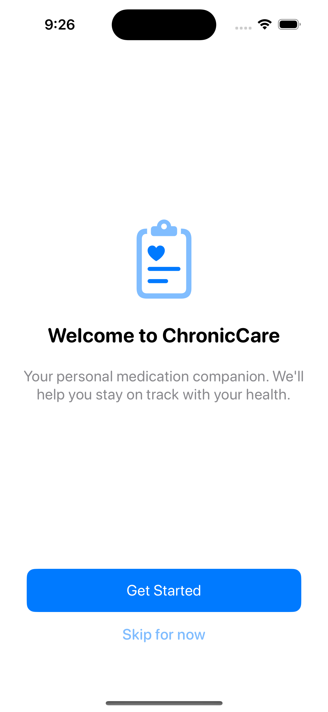

What makes it different
Designed around trust, not feature clutter.
Reliable reminder behavior
Scheduled reminders, snooze, follow-up logic, reminder diagnostics, refill alerts, and course-end reminders are treated as a core product system.
Low-friction daily use
Fast medication setup, camera-based OCR label scan, PRN support, streamlined logging, and medication-specific detail views reduce routine friction.
Local-first by default
Data stays on device by default, with backup, restore, export, and optional HealthKit integration instead of a cloud-first dependency.
Product flow
Three screens, three clear jobs.
The product is intentionally compressed around execution, management, and medication-specific context.
Today
A task-first execution screen for what needs attention now, what is overdue, and what comes later in the day.
Health
A management workspace for medications, reminder coverage, emergency access, caregiver support, and latest measurements.
Medication Detail
A single-medication surface for adherence snapshot, reminder strategy, maintenance state, and related health measurements.
Screens
Three product surfaces, shown more simply.
These screenshots are here to show structure and visual direction, not to explain every workflow in detail.

Today

Health

Medication Detail
Core capabilities
Built for the workflows that matter every day.
- Adaptive reminders with scheduled notifications, snooze, and follow-up logic
- Medication add/edit flows with PRN logic, inventory, course duration, and OCR label scan
- Measurement logging for blood pressure, glucose, weight, and heart rate
- Medication detail views with reminder explanation and related measurement trends
- Emergency card and caregiver support flows
- Backup, restore, PDF export, and HealthKit helpers
Current focus
Polishing reminder trust and product clarity
ChronicCare is already beyond a prototype. The current work is focused on notification reliability, visual consistency, medication detail refinement, and release-ready product polish.
Privacy posture
Local-first by design
Data is stored locally by default. Health and reminder workflows are designed around personal tracking, not medical diagnosis or cloud dependency.
Technical foundation
Native SwiftUI architecture with a product-first structure.
The codebase is organized around a small set of product surfaces and local-first services.
UISwiftUI, Swift Charts, custom cards and badges
DataCodable JSON persistence through DataStore
NotificationsUNUserNotificationCenter with custom scheduling and diagnostics
HealthHealthKit helpers and medication-linked measurements
ExportPDF reports, backup/restore, share sheets
TestingSwift Testing in ChronicCareTests
Open source
Browse the source or follow release progress on GitHub.
The repository contains the iOS app, README, release history, and the current product direction.